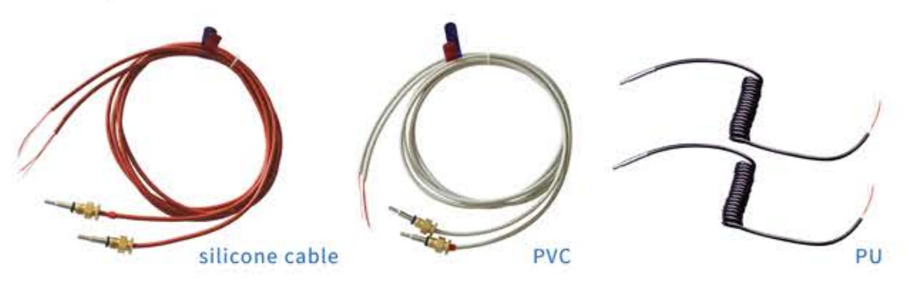

Temperature sensing, engineered to fit.
Bocon designs and manufactures temperature sensors, sensing elements, and transmitters for demanding measurement — from OEM integration to industrial production lines.
A closer look at
the temperature difference.
Explore standard and fast-response TM1101 sensor pairs. Select a model to see its performance, construction, wiring, and original documentation.
Explore the sensor family →Understand the application ↗
Heat metering, in focus
Explore matched temperature measurement for building heating and cooling systems.
Get the information your team needs
Tell us the product or application so we can help identify the relevant documents and next steps.
Quality & documentation
Request applicable certificates, testing information, and traceability details for your selected product.
Request supplier documents →Heat meter sensor brochure
Read the original English brochure, including the complete TM1101/51-5-1500 technical data.
Open brochure · PDF ↗Samples & qualification
Share the measurement range, installation, connection, and quantities you need to evaluate.
Discuss sample requirements →Have a temperature requirement?
Share your measurement range, installation, connection, and quantities. Send a drawing if you have one.